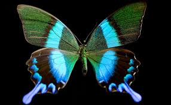

- Термін життя метеликів і його особливості
- Скільи живе метелик?
- Особливості тривалості життя метеликів
- Фактори, що впливають на життя метеликів
- Як довго живе метелик?
Цей крихітний комаха має легку будову тіла, покрите чутливою з ніжною начинкою крил. Особливостями метеликів є їх крихкість та кольори, які допомагають їм мимовільно приховатися від хижаків на їх природному середовищі.
Серед видів метеликів є ті, які мають тривалу та непосильну життєву діяльність, але є й такі, чиї життєві цикли досить короткі – лише кілька годин чи днів. Один з найвідоміших видів метеликів, який несе назву Монарх, може жити до 9 місяців.
Фактори, що впливають на тривалість життя метелика, включають клімат, генетику, доступ до їжі та наявність хижаків. Незалежно від того, який вид метелика, основним періодом життя метелика є стадія личинки та лялечки, після якої він стає дорослим комахою і готовий до розмноження.Оскільки метелики є невід’ємною частиною екосистеми, раді вмілості у полінізації рослин та збереженні біорізноманіття, вивчення тривалості життя метеликів має важливе значення для нашого розуміння їх ролі у природі та захисту їх середовища.
Термін життя метеликів і його особливості
Зазвичай, метелики живуть від одного до декількох тижнів. Однак, є й винятки з цього правила. Деякі види метеликів можуть жити всього кілька днів або навіть годин, тоді як інші метелики можуть жити до 11 місяців.
- Вид. Різні види метеликів мають різний термін життя. Деякі види метеликів, такі як метелики-монархи, можуть пролетіти до 3-4 поколінь перед тим, як вмирати. Інші види метеликів мають більш короткоживучий термін життя.
- Умови середовища. Зовнішнє середовище також впливає на тривалість життя метеликів. Змінність погодних умов та наявність відповідних рослин для живлення можуть сприяти або скорочувати термін життя метеликів.
- Різновидність живлення. Деякі метелики мають специфічні вимоги до рослин, на яких вони живуть і харчуються.Якщо ці рослини стають недоступними або вимерлими, то і метелики можуть бути примушені шукати нові джерела їжі або навіть загинути.
- Практики розмноження. Часто, тривалість життя метеликів також залежить від їхніх практик розмноження. Деякі види метеликів розмножуються велику кількість потомства нараз, що може впливати на їхню тривалість життя. Інші види метеликів мають менше потомства, але живуть тривалий час і можуть забезпечувати передачу генетичної інформації на кілька поколінь.
Скільки живе метелик?
Метелики – це чудові і надзвичайні комахи, які вражають своєю красою та легкістю польоту. Але скільки живе метелик і які фактори впливають на тривалість його життя?
Тривалість життя метеликів може значно варіюватися залежно від виду. Деякі види метеликів мають дуже короткий термін життя, не більше кількох днів або навіть годин. Для інших видів, їхнє життя може тривати кілька тижнів,місяців або навіть років.
Термін життя метеликів залежить від багатьох факторів, включаючи середовище, в якому вони живуть, зміни клімату, доступність їжі та ворогів. Наприклад, багато видів метеликів, які живуть в тропічних регіонах, мають постійний доступ до їжі та вологи, тому їхнє життя може тривати багато місяців.
Проте, більшість видів метеликів мають значно менший термін життя. Наприклад, метелики-денні мають середній термін життя від одного до двох тижнів. Такі метелики живуть швидким та інтенсивним життям, активно шукаючи партнерів для розмноження та корму.
Цікаво, що для багатьох видів метеликів, перехід від стадії личинки до дорослого імаго може зайняти значну частину їхнього життя. Наприклад, час, який дорослі метелики бабки, так як вони займаються активним пошуком партнерів для розмноження та не мають багато часу довго жити.
Узагалі, термін життя метеликів – це непостійний і незручний момент, залежно від виду та інших факторів. Незважаючи на це, величезне розмаїття та краса метеликів завжди залишають нас захопленими і захоплюють наше уявлення.
Особливості тривалості життя метеликів

Тривалість життя метеликів може сильно варіюватися залежно від виду і родини. Деякі метелики живуть лише кілька днів, під час яких їх основним завданням є розмноження. Інші метелики можуть жити приблизно один-два місяці. А декотрі види, які переживають зиму в стадії лялек або куколок, можуть жити кілька місяців або навіть більше року.
Одним з найбільш важливих факторів, що впливають на тривалість життя метеликів, є його етап розвитку. Наприклад, самці деяких видів можуть жити менше, ніж самки. Це пов’язано з тим, що самці метеликів більше зусиль витрачають на пошуки самиць та розмноження, що скорочує їх тривалість життя в порівнянні із самками.
Також, тривалість життя метеликів може бути вплинута його поживним середовищем. Якщо у метеликів є великий вибір їжі, вони можуть бути сильнішими і жити довше. Змінність у доступі до їжі, а також якість та кількість рослин, які є їжею для метеликів, впливають на їх тривалість життя.
Тривалість життя метеликів також залежить від сезонності і кліматичних умов. Наприклад, у зонах з помірним кліматом, де зима набагато холодніша, ніж літо, більшість метеликів живуть в стадії куколки або лялек під час зими, і виходять на світ навесні. Такі метелики живуть рекордно довго, оскільки проводять багато часу у спокійному стані. З іншого боку, ті метелики, які через свою стадію розвитку або особливості родини зберігаються впродовж зими, можуть жити довше в порівнянні з метеликами, які негайно виходять на світ після народження.
Метелики – хрупкі і красиві істоти, які являються важливими елементами екологічних систем. Тривалість життя метеликів варіюється і залежить від багатьох факторів, які включають стадію розвитку, поживність середовища та кліматичні умови. Вивчення цих факторів дозволяє нам краще розуміти життєвий цикл та екологічну роль метеликів.
Фактори, що впливають на тривалість життя метеликів
Тривалість життя метеликів залежить від кількох факторів, які впливають на їхнє фізичне та емоційне становище. Ось кілька факторів, які впливають на тривалість життя метеликів:
- Вид метелика:Кожний вид метелика має свій власний термін життя. Деякі види метеликів живуть всього кілька днів, тоді як інші можуть жити кілька місяців. Зазвичай, метелики з коротким терміном життя мають швидкий цикл розмноження та розвитку, тоді як метелики з довгим терміном життя мають повільний цикл розвитку та розмноження.
- Середовище проживання: Умови середовища проживання метеликів можуть впливати на їхню тривалість життя.Метелики, які мешкають у природних середовищах з багатою рослинністю та різноманітними джерелами їжі, мають кращі шанси на довге життя порівняно з метеликами, які проживають у виробничих зонах або міському середовищі з високою концентрацією забруднень.
- Харчування: Дієта метеликів також впливає на їхню тривалість життя. Деякі види метеликів полюбляють нектар квітів, тоді як інші їдять сік фруктів або рослинні стебла. Від набору поживних речовин, які метелики отримують з їжі, залежить їхня здатність виживати та розмножуватися.
- Посередники та хижаки: Різні види метеликів мають своїх природних ворогів, таких як птахи, комахи та павуки. Наявність таких ворогів може скоротити тривалість життя метелика, оскільки вони можуть стати жертвою хижаків на різних стадіях свого життєвого циклу.
- Кліматичні зміни: Зміни в кліматичних умовах можуть також впливати на тривалість життя метеликів. Наприклад, заморозки, спекотні літні дні або відсутність опадів можуть негативно вплинути на життєвий цикл та тривалість життя метеликів.
Загалом, тривалість життя метеликів залежить від багатьох факторів, а розуміння цих факторів може бути корисним для збереження та охорони природних угруповань метеликів.
Питання та відповіді
Як довго живе метелик?
Тривалість життя метелика залежить від його виду. Деякі метелики живуть тільки декілька тижнів, поки інші можуть жити кілька місяців або навіть років. Наприклад, деякі денні метелики живуть всього 2-4 тижні, тоді як темні метелики, такі як монархи, можуть жити до 6 місяців.
Які фактори впливають на тривалість життя метелика?
Тривалість життя метелика залежить від кількох факторів. Наприклад, середня тривалість життя метелика зазвичай залежить від його виду, деякі метелики проживають декілька тижнів, тоді як інші можуть жити кілька місяців або навіть років. Крім того, умови середовища, доступність їжі та наявність природних ворогів також впливають на тривалість життя метелика.
Які фактори впливають на тривалість життя метелика?
Так, деякі метелики можуть жити кілька років. Наприклад, монарх (Danaus plexippus) може жити до 6 місяців, а метелик-татарин (Polyommatus icarus) може жити від 1 до 2 років. Однак, більшість метеликів живуть значно менше – від декількох днів до кількох тижнів, залежно від виду і умов середовища.